过去 48 小时 AI 圈最值得关注的动态 · 点标题可看原文
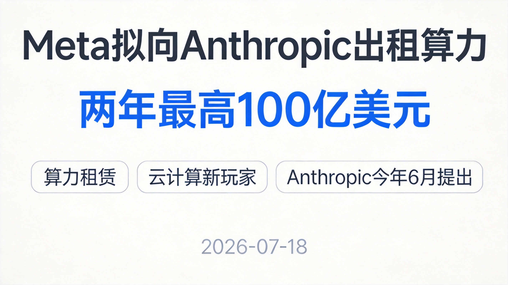
发生了什么：据《纽约时报》报道，Meta 正与 Anthropic 进行初步谈判，计划把自家数据中心的算力租给对方，合作两年、价值最高 100 亿美元，方案由 Anthropic 今年 6 月主动提出。
为什么值得关注：Meta 2026 年资本开支预计高达 1450 亿美元，扎克伯格此前透露"几乎每周都有外部公司来问能不能买我们的算力"。这笔交易若达成，Meta 将正式杀入云计算市场，和亚马逊、微软、谷歌抢饭碗。
行业信号：Anthropic 最近抢算力抢疯了——5 月刚和 SpaceX 签了三年 450 亿美元大单，4 月又和谷歌、亚马逊各签 5GW 容量协议。顶级 AI 公司对算力的渴求远没到头，算力正在从"自建自用"变成一门对外出售的大买卖。
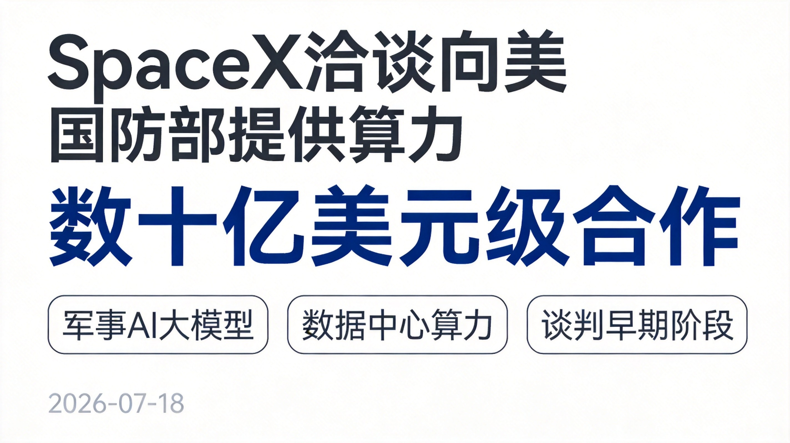
发生了什么：据《华尔街日报》消息，SpaceX 正与美国国防部谈判，拟向五角大楼提供价值数十亿美元的数据中心算力，用来跑军方的 AI 大模型，目前还在早期阶段。
家底有多厚：SpaceX 今年 6 月刚和谷歌签了多年期云服务协议，提供约 11 万颗英伟达芯片的算力；Anthropic 也在用它位于孟菲斯的 Colossus 1 数据中心，拿了 300 兆瓦算力。
影响：若落地，这将是 SpaceX 和美军方迄今规模最大的商业合作之一，也直接冲击现有云计算市场格局——造火箭的正式下场卖算力了。
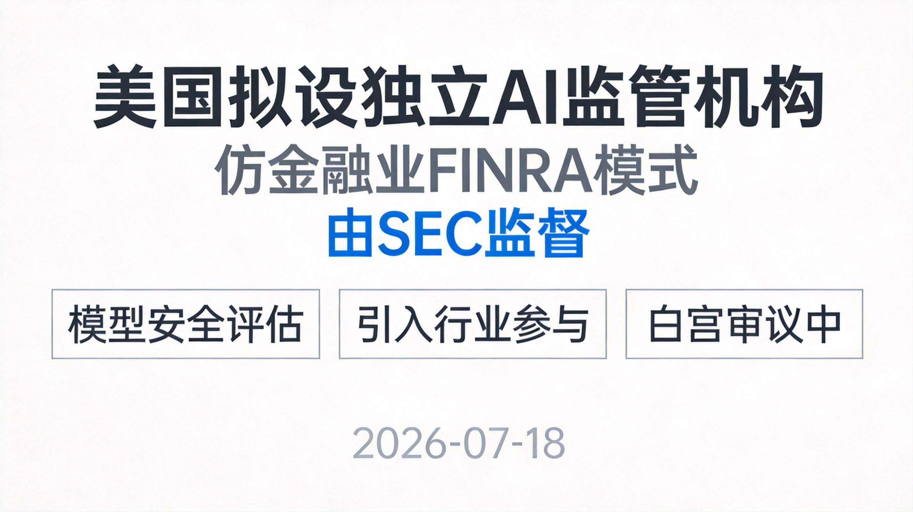
发生了什么：据彭博社 7 月 18 日消息，在硅谷抱怨美国近期限制尖端 AI 系统发布的措施过于随意之后，特朗普政府正考虑设立一个独立的 AI 监管机构，仿照金融业监管局（FINRA）模式、向美国证券交易委员会（SEC）汇报。
谁在推：财政部长贝森特参与制定了该提案，目前正由白宫幕僚长威尔斯审查。
意义：这标志着 AI 模型审查要从"企业自律+临时管制"走向制度化的独立监管框架，以后前沿模型发布可能要先过一道专门的"安检门"。
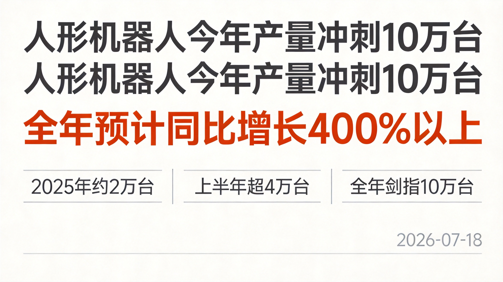
核心数字：工信部副部长柯吉欣在人形机器人与具身智能标准化技术委员会年度会议上披露：2025 年我国人形机器人产量约 2 万台，2026 年上半年已超 4 万台，预计全年突破 10 万台，同比增长 400% 以上。
行业痛点：标委会主任委员谢少锋直言行业"百花齐放却又各自为战"——技术路线发散、产品标准缺失、商业化路径不清是三大拦路虎。
下一步：工信部将加快研制人形机器人智能分级、数据管理、安全规范等急需标准，产业正从单机样机、舞台展示走向批量交付。
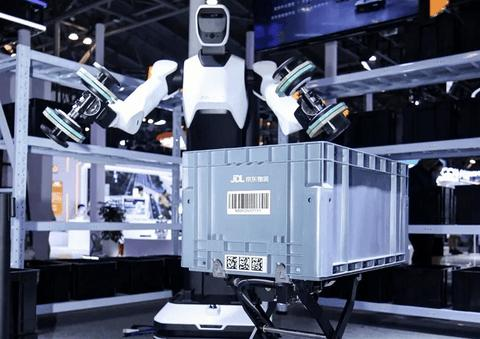
发生了什么：在 WAIC 2026 上，京东物流与智元联合推出新一代安规级重载具身机器人精灵 G2 Max，宣布应用于京东物流智狼仓。
硬指标：单臂负载 18kg，支持 24 小时不间断搬运、码垛作业。
意义：这是人形机器人第一次在真实仓储作业生产场景中部署落地——不再是展台上的表演嘉宾，而是正式打卡上班的"新员工"。
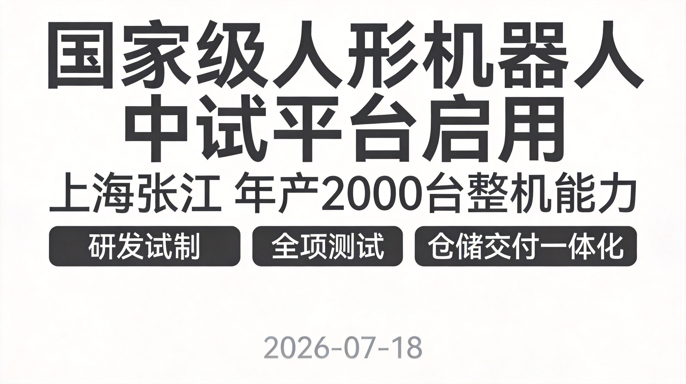
发生了什么：7 月 18 日，国家地方共建人形机器人创新中心中试公共服务平台在上海浦东张江机器人谷正式启用。
能力：构建了研发试制、精密装配、全项测试、仓储交付一体化中试闭环，具备年产 2000 台整机、2000 套核心精密组件的能力。
意义：给具身智能产业打通了从研发到量产的关键节点——实验室成果想变成货架上的产品，以后有了国家级的"中转站"。
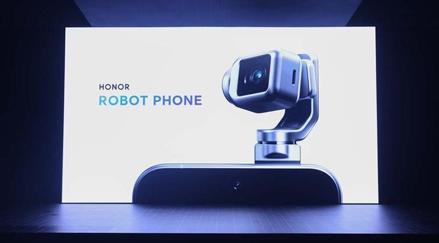
发生了什么：7 月 18 日，荣耀 CEO 李健在 WAIC 宣布全球首款机器人手机荣耀 Robot Phone 开启全渠道预约，2026 年 8 月正式发布。
卖点：主打 4D 折叠云台与具身智能——摄像头能像机械臂一样动起来。
预约权益：预约用户可获终身 YOYO SVIP 会员、1 年云台无忧换等权益。
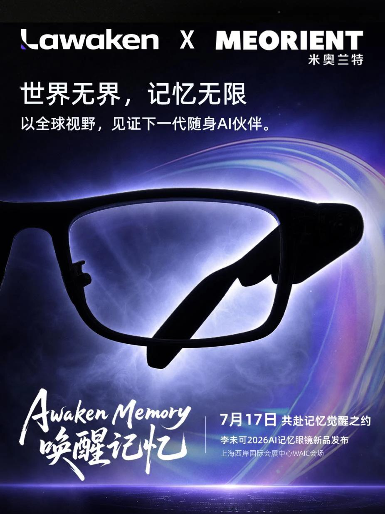
发生了什么：7 月 17 日，李未可在 WAIC 发布全球首款 AI 记忆眼镜 X-AI，主打"长期记忆"。
核心能力：可无感收录会议、洽谈等场景并由 AI 梳理归档，支持 10 小时以上持续录音——相当于给你配了个随身秘书，见过的事它都帮你记着。
价格：售价 799 元起，预售价最低 499 元，并作为腾讯 WorkBuddy 生态首批战略共创伙伴接入办公能力。
发生了什么：7 月 17 日，新锐 AI 穿戴品牌 Moonix（莫奈）首款产品 Moonix AI 眼镜标准版全球同步发售，定价 2299 元起。
反直觉打法：主动砍掉翻译、提词器、导航等常见功能，把所有资源押注在"记录"这一个场景上。整机仅 14.9 克、续航 16 小时，39 种镜框可选。
渠道与资本：通过官方小程序、京东旗舰店及全国 100 家博士眼镜店销售，公司同时透露即将启动第二轮融资。
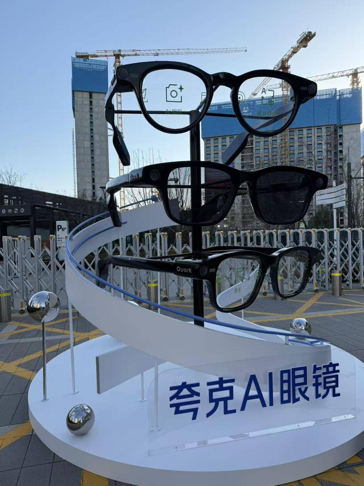
发生了什么：WAIC 开幕日，千问宣布旗下 AI 眼镜升级为智能体驱动眼镜。
新能力：新增全双工语音、眼动追踪、虹膜核身、体征监测，支持按需调用第三方 Skill 和 Agent。
老用户不亏：已发售的 S1 和 G1 都可以通过 OTA 免费升级。
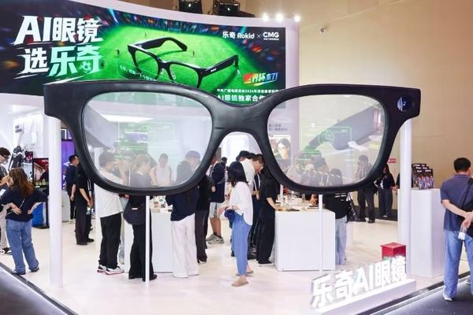
发生了什么：7 月 18 日，乐奇 Rokid 在 WAIC 2026 正式发布全球首款专为智能眼镜打造的原生 AI 操作系统 YodaOS，同时推出新一代 AR 眼镜。
特别之处：YodaOS 也是全球首款支持 AIUI 的 AI 操作系统，从系统架构层面围绕眼镜形态重新设计——不是把手机系统塞进眼镜，而是为眼镜从零造一个系统。
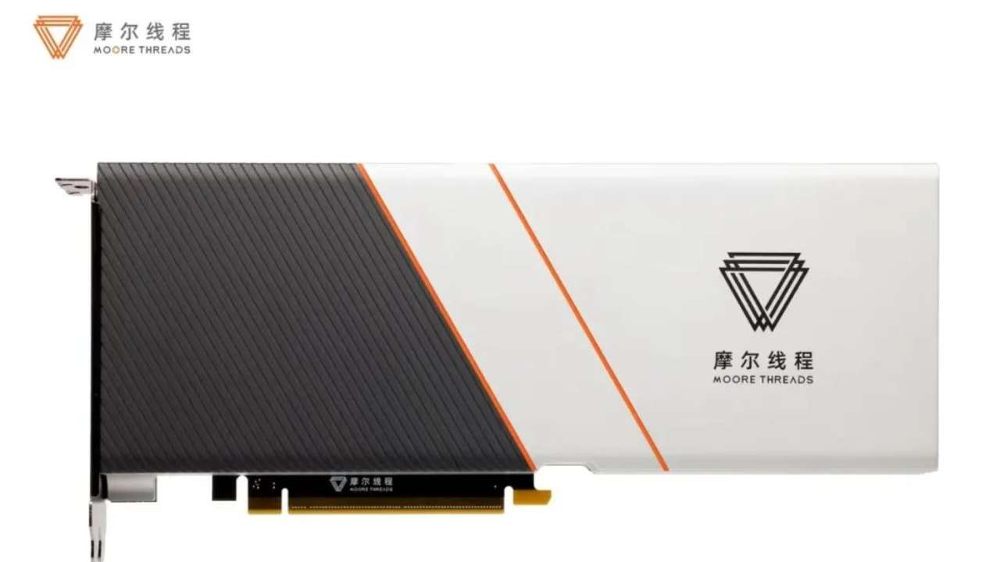
核心数字：7 月 16 日晚间，摩尔线程发布业绩预告：2026 年上半年预计营收 16.5 亿至 17.5 亿元，同比增长 135.12% 至 149.37%——半年就超过了 2025 年全年的营收。
增长引擎：公司称得益于 AI 产业蓬勃发展及市场对全功能 GPU 的强劲需求，夸娥智算集群商业化加速。
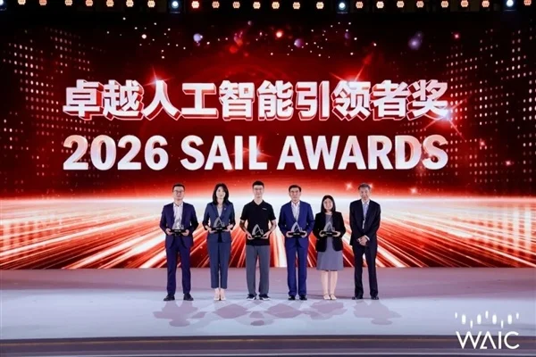
发生了什么：在 WAIC 2026 上，东方算芯首次公开展出全球首颗软件定义近存计算 3D AI 芯片 DF1000，并斩获 2026 SAIL 奖"卓越人工智能引领者奖"。
技术路线：基于国产 14nm+ 成熟制程，走"软件定义＋3D 堆叠近存计算"路线，实测 BF16 算力可达 520 TFLOPS，单芯片访存带宽 6.4TB/s，已完成 128 卡集群验证。
意义：不拼先进制程拼架构创新，综合性能号称可对标海外 4nm 高端算力芯片，全环节国产供应链自主可控。
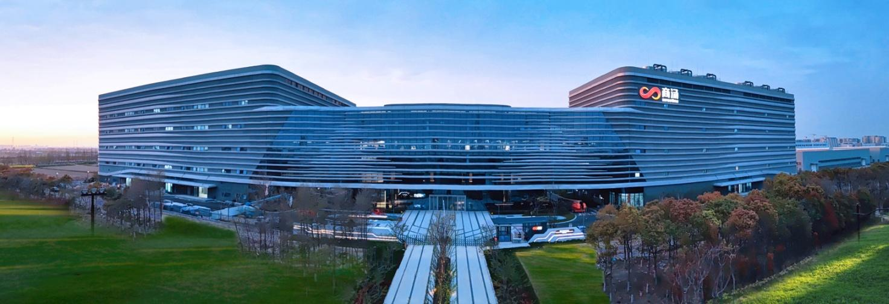
发生了什么：在 WAIC 2026 算电协同专题研讨会上，商汤大装置发布"算电协同 Agent"，率先提出以 TPW（单位电力成本产出 Token 数量）取代沿用多年的 PUE 指标，重新定义智算中心效能标尺。
落地效果：方案已在商汤临港 AIDC 全面落地，实现单位电力成本 Token 产出提升 80%、算力负荷预测准确率 96%。
怎么理解：以前看数据中心省不省电看 PUE，以后直接看"每度电能产出多少 Token"——更直接，也更狠。
发生了什么：7 月 17 日，英伟达发布面向 AI 智能体和 RAG 场景的 Nemotron 3 Embed 系列开源嵌入模型，开放权重、支持商用，已通过 Hugging Face 与 NVIDIA NIM 免费提供。
成绩：8B 版本以 78.5% 的平均得分登顶 RTEB 检索基准榜首，配 32K 上下文窗口；1B 版本相比前代错误率降低 27%。
谁在排队用：IBM、Palantir、ServiceNow、Zoom 等一票企业已在评估或集成。
发生了什么：在 WAIC 2026 上，京东健康旗下 AI 医生"大为"与循证医学 AI 产品"京东知医"同台参展。
能力："大为"基于自研"京医千询"医疗大模型与权威临床指南打造，覆盖超千种中西医病症，打通在线问诊、到家快检、护士上门、药品配送全流程——从问病到送药一条龙。
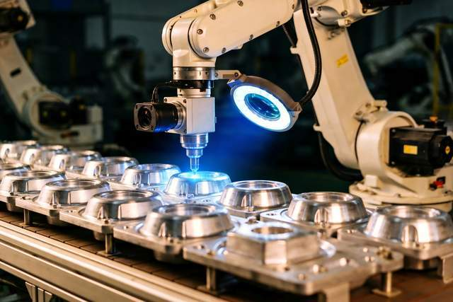
发生了什么：在 WAIC 2026 上，西门子面向中国市场首次发布全球首款工业自动化工程 AI 智能体 Eigen。
能干什么：可独立完成从任务规划、执行到验证的全流程工程作业，能智能生成 PLC 代码、完成 HMI 可视化开发。
效率：执行效率较手动工作流提升 2 至 5 倍，工程整体效率提升 50%，方案质量提升 80%——自动化工程师的"外挂"来了。
本期全部引用来源，方便多方查证
本报告由 AI 检索公开信息整理生成，内容仅供参考，请以原始来源为准
生成时间：2026年7月18日 · AI 圈实时雷达
点个赞鼓励一下吧 ✨
💬 评论交流